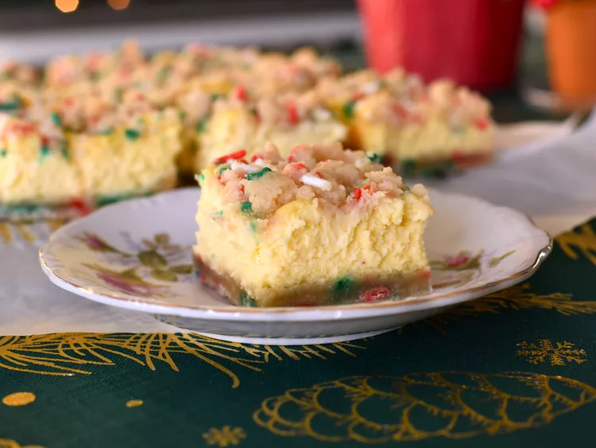

Home
Christmas cheesecake bars recipe

Description:
And let's continue the trend with more CHEESE! This time, sugary cheesecake bars for dessert! Yum!
SO ANYWAYS, let's just jump into the recipe itself:
Ingredients:
Crust and Crumb Topping
- 3/4 cup unsalted butter, softened
- 1/2 cup firmly packed light brown sugar
- 1/2 cup white sugar
- 3/4 teaspoon salt
- 1/4 teaspoon ground nutmeg
- 2 teaspoons vanilla extract
- 1/2 teaspoon almond extract
- 2 cups all-purpose flour
- 1/3 cup holiday jimmie sprinkles
Filling
- 2 (8-ounce) packages full fat cream cheese, softened
- 1/2 cup white sugar
- 1 tablespoon all-purpose flour
- 1 teaspoon vanilla extract
- 1/4 teaspoon salt
- 1 pinch ground nutmeg
- 2/3 cup heavy cream, at room temperature
- 1 tablespoon lemon juice
- 2 large eggs, at room temperature
Directions:
- Preheat the oven to 350 degrees F (180 degrees C). Line a 9x9-inch square pan
with enough parchment paper to have overhang on all sides.
- For the crust, combine butter, brown sugar, white sugar, salt, nutmeg, vanilla,
and almond extract in a large bowl and beat with an electric mixer until light
and fluffy, 2 to 3 minutes. Add in 1 cup of flour and mix until just combined.
Add in remaining 1 cup flour and beat until mixture resembles coarse crumbs.
Pour in sprinkles and use your hands to mix the dough until it comes together
in large clumps.
- Measure out about 1 1/2 cups of the crumb mixture and place into the prepared
pan; press firmly and evenly into the bottom of the pan. Reserve remaining
crumbs for topping.
- Bake in the preheated oven until edges of crust begin to turn golden, 15 to 20
minutes. Remove from the oven and allow crust to cool for 5 minutes. Keep the
oven on.
- While crust bakes, make the filling; combine cream cheese, sugar, flour,
vanilla, salt, and nutmeg in a large bowl and beat with an electric mixer until
smooth and well combined. Add in heavy cream and lemon juice and mix until smooth
and combined. Add in eggs and mix on low speed until just combined.
- Once crust has cooled for 5 minutes, pour filling over the crust and spread into
an even layer. Sprinkle reserved crumbs over the top of the filling, breaking up
any very large clumps of dough as needed.
- Return pan to the oven and bake until edges of bars are slightly puffed and set;
with just a slight jiggle in the center, 30 to 35 minutes. Allow bars to cool to
room temperature, then refrigerate until chilled; at least 4 hours. Cut into 16
bars.